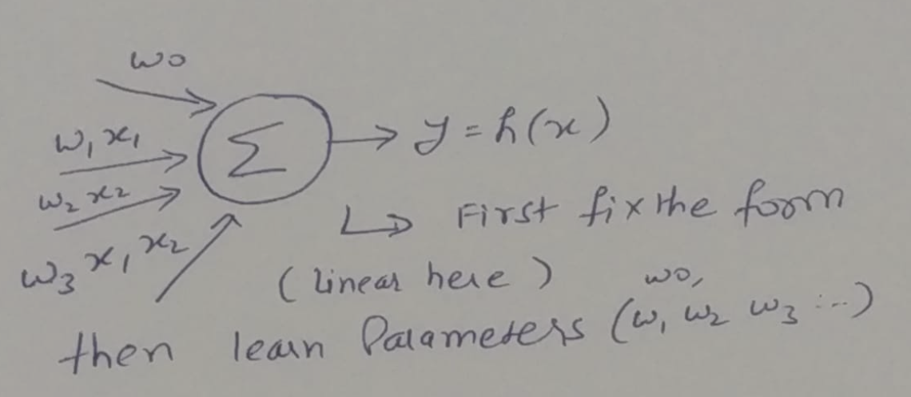
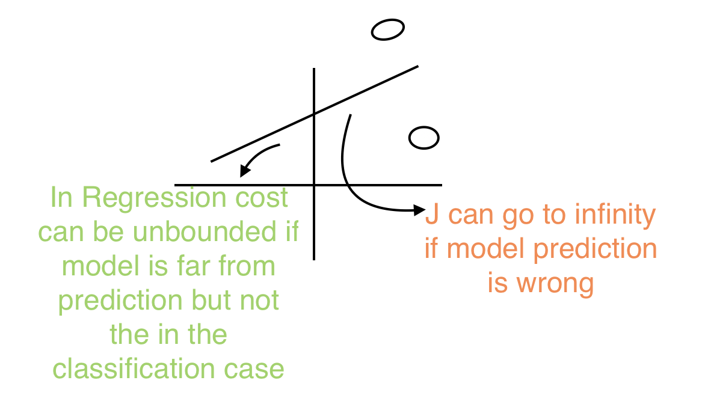
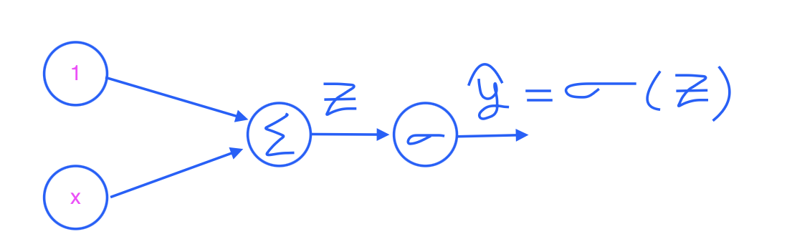
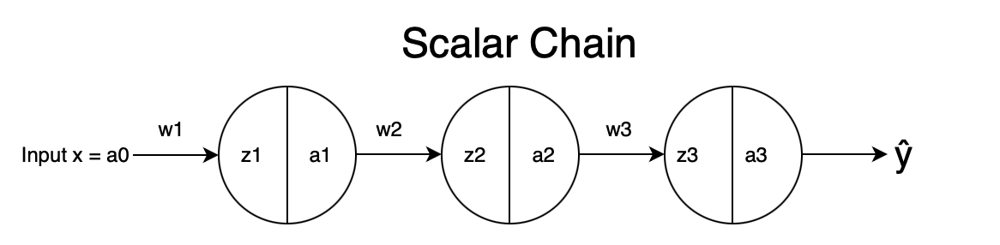
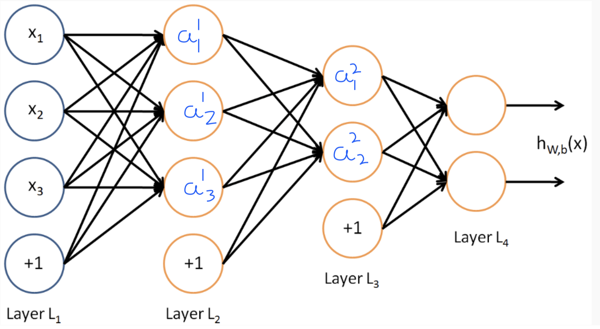
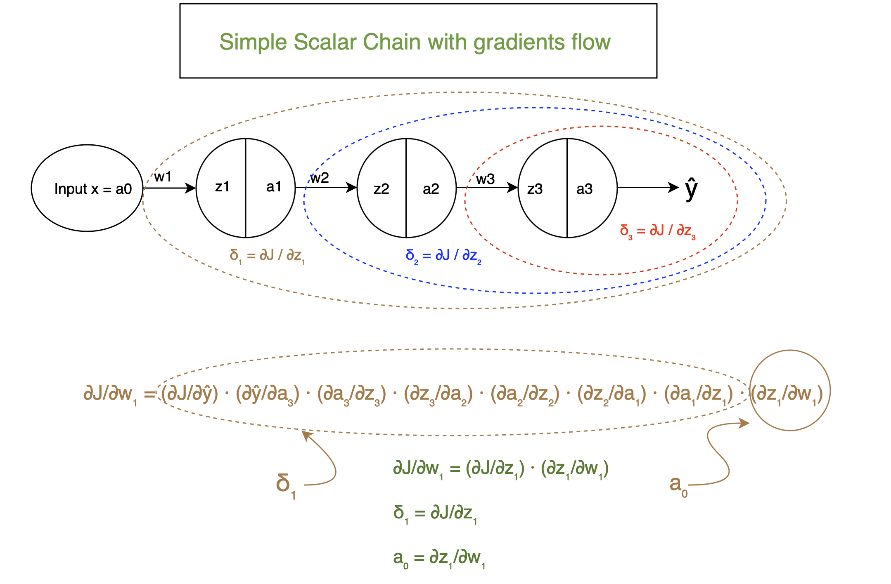
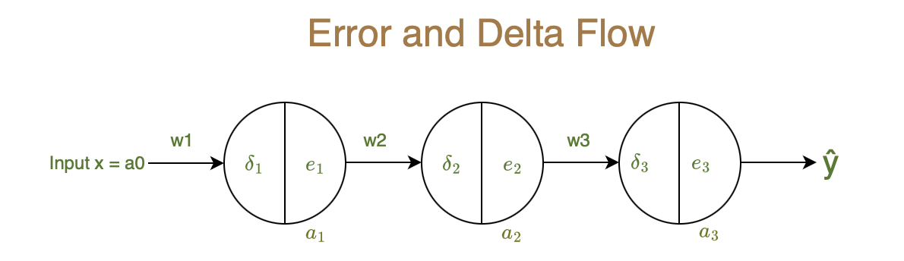
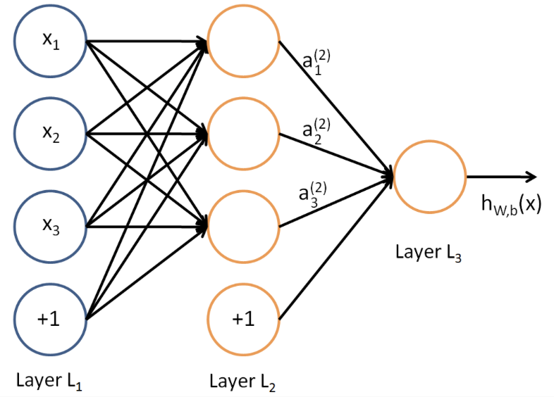

\[
y = h(x) = w_0 + w_1x_1 + w_2x_2 + w_3x_1x_2
\]

- Guess the form of the hypothesis function for a problem with N features.
- here the form is linear combination of the features and their interactions.
- we will fix the form of the hypothesis function and learn the parameters (weights) from data.
\[ w^{(t+1)} = w^t - \alpha \nabla_w J(w^t) \]
$y = w_0 + w_1x$ (We always assume m as total samples)
\[J(w_0,w_1) = \frac{1}{2m} \sum_{i=1}^{m} \big(\hat{y}^{(i)} - y^{(i)}\big)^2\] \[J(w_0,w_1) = \frac{1}{2m} \sum_{i=1}^{m} \big(w_0 + w_1x^{(i)} - y^{(i)}\big)^2\] \[\frac{\partial J}{\partial w_0} = \frac{1}{m}\sum_{i=1}^{m}\big(\hat{y}^{(i)}-y^{(i)}\big).1\] \[\frac{\partial J}{\partial w_1} = \frac{1}{m}\sum_{i=1}^{m}\big(\hat{y}^{(i)}-y^{(i)}\big).x^{(i)}\] \[w_0 = w_0 - \alpha\frac{\partial J}{\partial w_0} \] \[w_1 = w_1 - \alpha\frac{\partial J}{\partial w_1} \]
$y = w_0 + w_1x + w_2 x^2$
\[\frac{\partial J}{\partial w_0} = \frac{1}{m}\sum_{i=1}^{m}\big(\hat{y}^{(i)}-y^{(i)}\big).1\] \[\frac{\partial J}{\partial w_1} = \frac{1}{m}\sum_{i=1}^{m}\big(\hat{y}^{(i)}-y^{(i)}\big).x^{(i)}\] \[\frac{\partial J}{\partial w_2} = \frac{1}{m}\sum_{i=1}^{m}\big(\hat{y}^{(i)}-y^{(i)}\big).{x^{(i)}}^2\] \[w_0 = w_0 - \alpha\frac{\partial J}{\partial w_0} w_1 = w_1 - \alpha\frac{\partial J}{\partial w_1} w_2 = w_2 - \alpha\frac{\partial J}{\partial w_2} \]\[ \begin{bmatrix} 1 & x_1^{(1)} & x_2^{(1)} & \ldots & x_n^1 \\ 1 & x_1^{(2)} & x_2^{(2)} & \ldots & x_n^2 \\ \vdots & \vdots & \ddots & \vdots \\ 1 & x_1^{(m)} & x_2^{(m)} & \ldots & x_n^m \end{bmatrix} \begin{bmatrix} w_0 \\ w_1 \\ \vdots \\ w_n \end{bmatrix} = \begin{bmatrix} y^{(1)} \\ y^{(2)} \\ \vdots \\ y^{(m)} \end{bmatrix} \]
A typical input can be as weird as shown below: \[x_i^m = sin(\omega x_j^m) or x_i^m = log(\omega x_j^m) or x_i^m = \exp\left(-\frac{(x_j^{(m)} - \mu_j)^2}{2\sigma_j^2}\right) \] Weights will remain linear but the input can be as weired
\[ J(w) =\frac{1}{2m} ||XW-Y ||^2 \] Let us say
$R = C^{\mathrm{T}} W = [\,c_1 \; c_2 \; \cdots \; c_n\,] \begin{bmatrix} w_1 \\ w_2 \\ \vdots \\ w_n \end{bmatrix}$
where \(C\) is a constant vector independent of \(W\). Then, \[ \frac{\partial R}{\partial w} = \begin{bmatrix} \frac{\partial R}{\partial w_1} \\ \frac{\partial R}{\partial w_2} \\ \vdots \\ \frac{\partial R}{\partial w_n} \end{bmatrix} = \begin{bmatrix} c_1 \\ c_2 \\ \vdots \\ c_n \end{bmatrix} = C \] Now say,$R = W^{\mathrm{T}} C = [\,w_1 \; w_2 \; \cdots \; w_n\,] \begin{bmatrix} c_1 \\ c_2 \\ \vdots \\ c_n \end{bmatrix}$
then also, \[ \frac{\partial R}{\partial w} = C \] Hence, \[ \frac{\partial }{\partial w} (W^{\mathrm{T}} C) = \frac{\partial }{\partial w} (C^{\mathrm{T}} W) = C \]
Consider $R = W^{\mathrm{T}} X^{\mathrm{T}} X W$. Assume $A = X^{\mathrm{T}} X$, then
$\frac{\partial R}{\partial W} = AW + A^{\mathrm{T}} W = 2AW = 2X^{\mathrm{T}} X W$ (since $A$ is symmetric).
Let us use above tricks to derive closed form of w
\[ J = ||XW - Y||^2\]
\[J = (XW - Y)^{\mathrm{T}}(XW - Y) = W^{\mathrm{T}}X^{\mathrm{T}}XW - 2Y^{\mathrm{T}}XW + Y^{\mathrm{T}}Y \]
\[\frac{\partial J}{\partial W} = 2X^{\mathrm{T}}XW - 2X^{\mathrm{T}}Y \]
Setting $\frac{\partial J}{\partial W} = 0$, we get
\[X^{\mathrm{T}}XW = X^{\mathrm{T}}Y \]
\[W = (X^{\mathrm{T}}X)^{-1}X^{\mathrm{T}}Y \]
Explore and run the gradient descent code interactively in Google Colab.
Batch Gradient Descent Notebook in Colab
Linear Regression:
\[y = w_0 + w_1 x_1 + w_2 x_2 + \cdots + w_n x_n\]
Logistic Regression:
\[\hat{y} = \sigma\!\big(w_0 + w_1 x_1 + w_2 x_2 + \cdots + w_n x_n\big),\quad \sigma(z) = \frac{1}{1+e^{-z}}\]
Q) Why do we need logistic regression when we already have linear regression?
Q) What is the issue with using linear regression for classification problems, and how does Binary Cross Entropy solve it?
\[ J(y,\hat{y}) = (y - \hat{y})^2 \]
-> Does not give strong feedback as shown in below example
-> Comes natural from gauussian likelihood perspective
Example:
Let us take the example of patient with cancer detection.
so, derive a new cost function for classidfication problems called Binary Cross Entropy (BCE) loss.
\[ J(y,\hat{y}) = -y \log(\hat{y}) - (1-y) \log(1-\hat{y}) \]
Example showing it is a better loss function:
Eg: Let us say that Truth is cancer and \(y = 1\), and \(\hat{y}\) = 0.8
\[ J_{BCE} = -1 \log(0.8) - (1-1) \log(1-0.8) = -\log(0.8) \approx 0.223 \]
Now, let us say that Truth is no cancer and \(y = 0\), and \(\hat{y} \approx 0 or \epsilon\)
\[ J_{BCE} = - (1-0) \log(1-\epsilon) = -\log(0.8) \approx -\log(1) -> 0 \]
Assume \(y =1\) and \(\hat{y} = 0.0\)
the cost will be very high as \(-\log(0) -> \infty\)
More confidently you make mistake, the loss function will peanlize more
Gradient Setup of logistic regression with BCE loss:

\[J = -y \ln(\hat{y}) - (1-y) \ln(1-\hat{y}) \]
\[\hat{y} = \sigma(z) = \frac{1}{1+e^{-z}} \]
\[z = w^{\mathrm{T}} x = w_0 + w_1 x_1 \]
\[ \frac{\partial J}{\partial w_0} = \frac{\partial J}{\partial \hat{y} } \frac{\partial \hat{y}}{\partial {z} } \frac{\partial z}{\partial {w_0} }
, \frac{\partial J}{\partial w_1} = \frac{\partial J}{\partial \hat{y} } \frac{\partial \hat{y}}{\partial {z} } \frac{\partial z}{\partial {w_1} } \]
\[\frac{\partial J}{\partial \hat{y} } = -\frac{y}{\hat{y}} + \frac{1-y}{1-\hat{y}} = \frac{\hat{y} - y}{\hat{y}(1-\hat{y})} \]
\[\frac{\partial \hat{y}}{\partial {z} } = \left(\frac{e^{-z}}{1+e^{-z}}\right) \left(\frac{1}{1+e^{-z}}\right) =\hat{y}(1-\hat{y}) \]
\[\frac{\partial z}{\partial {w_0} } = 1 , \frac{\partial z}{\partial {w_1} } = x_1 \]
\[\therefore \frac{\partial J}{\partial w_0} = (\hat{y} - y).1 , \frac{\partial J}{\partial w_1} = (\hat{y} - y).x_1 \]
The bound that was created using exponential function in the sigmoid is again brought back to normal form using logarithm.
sigmoid created bound: \(0 < \hat{y} < 1\)
logarithm removed the bound: \(-\infty < J < \infty\)
\[
J_{BCE} = \left\{ \begin{array}{ll}
-\ln(\hat{y}) & \text{if } y=1 \\
-\ln(1-\hat{y}) & \text{if } y=0
\end{array} \right.
\]
\[J_{BCE} = -y \ln(\hat{y}) - (1-y) \ln(1-\hat{y}) \]
Explore and run the Logistic gradient descent code interactively in Google Colab.
Logistic Gradient Descent Notebook in Colab
For multiclass classification problems, we use Categorical Cross Entropy (CCE) loss function.
\[ J_{CCE} = - \sum_{i=1}^{K} y_i \log(\hat{y}_i) \]
where \(K\) is the number of classes, \(y_i\) is the true label.
The softmax function is used to convert logits into probabilities for each class.
\[\hat{y}_i = \frac{e^{z_i}}{\sum_{k=1}^{K} e^{z_k}} \]
where \(z_i\) is the logit for class \(i\).

\[x = a0 \quad z1 = a_0 w_1 \quad z2 = w_2 a_1 \quad z3 = w_3 a_2 \]
\[\quad \quad \quad \quad a_1 = g(z_1) \quad a_2 = g(z_2) \quad a_3 = g(z_3) \]
Finite Difference Method to compute gradients:
\[\frac{\partial J}{\partial w_3} = \frac{J(w_3 + \Delta w) - J(w_3)}{\Delta w} \]
\[\frac{\partial J}{\partial w_2} = \frac{J(w_2 + \Delta w) - J(w_2)}{\Delta w} \]
\[\frac{\partial J}{\partial w_1} = \frac{J(w_1 + \Delta w) - J(w_1)}{\Delta w} \]
Change \(w_3\) from 1 to 1.0001 and see the change in J to compute \(\frac{\partial J}{\partial w_3}\)
similarly for \(w_2\) and \(w_1\).
To estimate gradient using FDM is computationally expensive as we need to do forward pass for each weight perturbation.
No of multiplications for forward pass = total no of weights
# of multiplications to compute \(\frac{\partial J}{\partial w_3}\) = 3 from <- \(\frac{J(w_3 + \Delta w) - J(w_3)}{\Delta w}\) and 3 from <- \(\frac{\partial J}{\partial w_3}\)
similarly 3 multiplications for \(\frac{\partial J}{\partial w_2}\) and 3 for \(\frac{\partial J}{\partial w_1}\)
Total no of multiplications = 3 + 3 + 3 + 3 + = 12 multiplications
if we have \(N_w\) weights in the network, then total no of multiplications to compute gradients using
\[FDM = N_w*(N_w+1) \approx O(N_w^2) \]
Solution: Use Backpropagation to compute gradients efficiently using chain rule.

Forward Pass equations:
\[ z^1_1 = w^1_{11} x_1 + w^1_{12} x_2 + w^1_{13} x_3 + w^1_{14} x_4 \]
\[ z^1_2 = w^1_{21} x_1 + w^1_{22} x_2 + w^1_{23} x_3 + w^1_{24} x_4 \]
\[ z^1_3 = w^1_{31} x_1 + w^1_{32} x_2 + w^1_{33} x_3 + w^1_{34} x_4 \]
Matrix form:
\[\begin{bmatrix}
z^1_1 \\
z^1_2 \\
z^1_3
\end{bmatrix} =
\begin{bmatrix}
w^1_{11} & w^1_{12} & w^1_{13} & w^1_{14} \\
w^1_{21} & w^1_{22} & w^1_{23} & w^1_{24} \\
w^1_{31} & w^1_{32} & w^1_{33} & w^1_{34}
\end{bmatrix}
\begin{bmatrix}
x_1 \\
x_2 \\
x_3 \\
x_4
\end{bmatrix} \]
let \( a^0 = x \)
\[ Z^1 = W^1 a^0 a^1 = g(Z^1) \]
\[ Z^2 = W^2 a^1 a^2 = g(Z^2) \]
\[ Z^3 = W^3 a^2 a^3 = g(Z^3) \]
where \(W^l\) is the weight matrix for layer \(l\), \(Z^l\) is the pre-activation vector for layer \(l\), and \(a^l\) is the activation vector for layer \(l\).
\[ \hat{y} = a^3 \]
We will learn backpropagation via single chanin and extend to multiple layers
Consider the below network with single chain:

\[\frac{\partial J}{\partial w_1} = \frac{\partial J}{\partial \hat{y}} \cdot \frac{\partial \hat{y}}{\partial a_3} \cdot \frac{\partial a_3}{\partial z_3} \cdot \frac{\partial z_3}{\partial a_2} \cdot \frac{\partial a_2}{\partial z_2} \cdot \frac{\partial z_2}{\partial a_1} \cdot \frac{\partial a_1}{\partial z_1} \cdot \frac{\partial z_1}{\partial w_1} \]
\[\frac{\partial J}{\partial w_2} = \frac{\partial J}{\partial \hat{y}} \cdot \frac{\partial \hat{y}}{\partial a_3} \cdot \frac{\partial a_3}{\partial z_3} \cdot \frac{\partial z_3}{\partial a_2} \cdot \frac{\partial a_2}{\partial z_2} \cdot \frac{\partial z_2}{\partial w_2} \]
\[\frac{\partial J}{\partial w_3} = \frac{\partial J}{\partial \hat{y}} \cdot \frac{\partial \hat{y}}{\partial a_3} \cdot \frac{\partial a_3}{\partial z_3} \cdot \frac{\partial z_3}{\partial w_3} \]
From above equations, we can see that we can reuse the computations of common terms to compute gradients efficiently.
Let us define:
\[ \delta_3 = \frac{\partial J}{\partial z_3} = \frac{\partial J}{\partial \hat{y}} \cdot \frac{\partial \hat{y}}{\partial a_3} \cdot \frac{\partial a_3}{\partial z_3} \]
\[ \delta_2 = \frac{\partial J}{\partial z_2} = \delta_3 \cdot \frac{\partial z_3}{\partial a_2} \cdot \frac{\partial a_2}{\partial z_2} \]
\[ \delta_1 = \frac{\partial J}{\partial z_1} = \delta_2 \cdot \frac{\partial z_2}{\partial a_1} \cdot \frac{\partial a_1}{\partial z_1} \]
Then,
\[\frac{\partial J}{\partial w_1} = \delta_1 \cdot \frac{\partial z_1}{\partial w_1} = \delta_1 \cdot a_0 \]
\[\frac{\partial J}{\partial w_2} = \delta_2 \cdot \frac{\partial z_2}{\partial w_2} = \delta_2 \cdot a_1 \]
\[\frac{\partial J}{\partial w_3} = \delta_3 \cdot \frac{\partial z_3}{\partial w_3} = \delta_3 \cdot a_2 \]
Now we need to find expressions for \(\delta_3\), \(\delta_2\) and \(\delta_1\):
\[\delta_1 = \frac{\partial J}{\partial z_1} = \frac{\partial J}{\partial a_1} \cdot \frac{\partial a_1}{\partial z_1} \]
let us define \( e_1 = \frac{\partial J}{\partial a_1} \)
\[\delta_1 = e_1 \cdot g'(z_1) \]
\[\delta_2 = \frac{\partial J}{\partial z_2} = \frac{\partial J}{\partial a_2} \cdot \frac{\partial a_2}{\partial z_2} \]
let us define \( e_2 = \frac{\partial J}{\partial a_2} \)
\[\delta_2 = e_2 \cdot g'(z_2) \]
\[\delta_3 = \frac{\partial J}{\partial z_3} = \frac{\partial J}{\partial a_3} \cdot \frac{\partial a_3}{\partial z_3} \]
let us define \( e_3 = \frac{\partial J}{\partial a_3} \)
\[\delta_3 = e_3 \cdot g'(z_3) \]
Now we need to find expressions for \(e_3\), \(e_2\) and \(e_1\):
\[ e_3 = \frac{\partial J}{\partial a_3} = \frac{\partial J}{\partial \hat{y}} \cdot \frac{\partial \hat{y}}{\partial a_3} = (\hat{y} - y) \cdot 1 \]
\[ e_2 = \frac{\partial J}{\partial a_2} = \frac{\partial J}{ \partial z_3} \cdot \frac{\partial z_3}{\partial a_2} = \delta_3 \cdot w_3 \]
\[ e_1 = \frac{\partial J}{\partial a_1} = \frac{\partial J}{ \partial z_2} \cdot \frac{\partial z_2}{\partial a_1} = \delta_2 \cdot w_2 \]
Finally let us write the complete back propagation algorithm:
Backpropagation Algorithm:

The backpropagation algorithm can be extended to neural networks with multiple chains and layers by applying the same principles of reusing computations of common terms and defining intermediate variables like \(\delta\) and \(e\) for each layer and neuron.

Let us write the partial derivatives for \(e^2_1\), \(e_2^2\), and \(e^2_3\):
\[ e^2_1 = \frac{\partial J}{\partial a^2_1} = \frac{\partial J}{\partial z^2_1} \cdot \frac{\partial z^2_1}{\partial a^2_1} + \frac{\partial J}{\partial z^2_2} \cdot \frac{\partial z^2_2}{\partial a^2_1} + \frac{\partial J}{\partial z^2_3} \cdot \frac{\partial z^2_3}{\partial a^2_1} \]
\[ e^2_1 = \delta^2_1 \cdot w^2_{11} + \delta^2_2 \cdot w^2_{21} + \delta^2_3 \cdot w^2_{31} \]
\[ e^2_2 = \frac{\partial J}{\partial a^2_2} = \frac{\partial J}{\partial z^2_1} \cdot \frac{\partial z^2_1}{\partial a^2_2} + \frac{\partial J}{\partial z^2_2} \cdot \frac{\partial z^2_2}{\partial a^2_2} + \frac{\partial J}{\partial z^2_3} \cdot \frac{\partial z^2_3}{\partial a^2_2} \]
\[ e^2_2 = \delta^2_1 \cdot w^2_{12} + \delta^2_2 \cdot w^2_{22} + \delta^2_3 \cdot w^2_{32} \]
\[ e^2_3 = \frac{\partial J}{\partial a^2_3} = \frac{\partial J}{\partial z^2_1} \cdot \frac{\partial z^2_1}{\partial a^2_3} + \frac{\partial J}{\partial z^2_2} \cdot \frac{\partial z^2_2}{\partial a^2_3} + \frac{\partial J}{\partial z^2_3} \cdot \frac{\partial z^2_3}{\partial a^2_3} \]
\[ e^2_3 = \delta^2_1 \cdot w^2_{13} + \delta^2_2 \cdot w^2_{23} + \delta^2_3 \cdot w^2_{33} \]
Complete Matrix form:
\[
\begin{bmatrix}
e^2_1 \\
e^2_2 \\
e^2_3
\end{bmatrix} =
\begin{bmatrix}
w^2_{11} & w^2_{21} & w^2_{31} \\
w^2_{12} & w^2_{22} & w^2_{32} \\
w^2_{13} & w^2_{23} & w^2_{33}
\end{bmatrix}
\begin{bmatrix}
\delta^2_1 \\
\delta^2_2 \\
\delta^2_3
\end{bmatrix}
\]
\[therefore,
E^2 = (W^2)^{\mathrm{T}} \delta^3 \]
Forward Pass equations:
\[z_1 = w_1 \cdot x + b_1 a_1 = \sigma(z_1) \]
\[z_2 = w_2 \cdot a_1 + b_2 a_2 = \sigma(z_2) \]
\[\hat{y} = a_2 \]
Note on derivative for BCE sigmoid case:
\[\sigma'(z) = \sigma(z)(1-\sigma(z)) \]
\[\therefore \sigma'(z) = a(1-a) \]
Backward Pass equations:
\[ \textcolor{green}{e_2} = \frac{\partial J}{\partial a_2} = \frac{\partial J}{\partial \hat{y}} \frac{\partial \hat{y}}{\partial a_2} = \textcolor{green}{(\hat{y} - y) \cdot 1} \]
\[ \textcolor{green}{\delta_2} = e_2 \cdot \sigma'(z_2) = \textcolor{green}{e_2 \cdot a_2(1-a_2)} \]
\[ \textcolor{green}{e_1} = \textcolor{green}{\delta_2 \cdot w_2} \]
\[ \textcolor{green}{\delta_1} = e_1 \cdot \sigma'(z_1) = \textcolor{green}{e_1 \cdot a_1(1-a_1)} \]
\[ \textcolor{green}{\frac{\partial J}{\partial w_2} = \delta_2 \cdot a_1} \]
\[ \textcolor{green}{\frac{\partial J}{\partial b_2} = \delta_2 \cdot 1} \]
\[ \textcolor{green}{\frac{\partial J}{\partial w_1} = \delta_1 \cdot x} \]
\[ \textcolor{green}{\frac{\partial J}{\partial b_1} = \delta_1 \cdot 1} \]